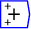
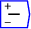
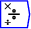
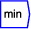
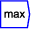

A model is constructed by wiring one component to another in a way that defines an equation. Wires are drawn from the output port of one block to the input port of another. Ports are circles on the blocks to which wires can be attached, which can be seen when hovering the pointer over the block. Variables have an input and an output port; constants and parameters only have an output port. A mathematical operator has as many input ports as are needed to define the operation. Some operators can be ``overloaded''—more than one input can be attached to an input port. Thus you can add more than two variables using the

block, simply by wiring more than one variable to each input port. The same applies to the subtraction block
, division
, minimum
and maximum
blocks.